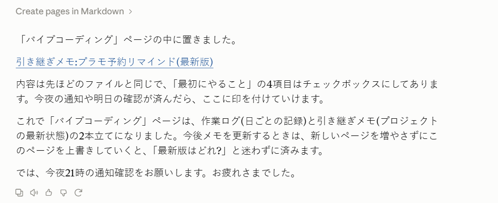

Notion、何度も挫折してきました
正直に告白します。私はNotionを「何年も」使いこなせませんでした。
便利そうなのはわかるんです。周りでも使っている人は多いし、「仕事の情報を一元管理できる」「メモもタスクも全部まとめられる」と聞くたびに、今度こそと思ってアカウントを開く。YouTubeで使い方の動画を見て、WEBで「Notion 初心者」と検索して、テンプレートも眺めてみる。
でも、続かない。
白紙のページを前にすると、何をどう作ればいいのかわからないんです。データベース、ビュー、プロパティ……。説明を読めば読むほど、「で、自分は何を作ればいいの？」と手が止まる。そして気づけば放置。これを何度繰り返したかわかりません。
転機は「使い方」を覚えるのをやめたこと
最近、私は趣味の延長で「バイブコーディング」に取り組んでいます。AIと会話しながらアプリを作るやり方で、今はプラモデルの新製品の予約開始を知らせてくれる、自分用のリマインドアプリを作っています。
その作業の中で、困ったことが出てきました。作業が何日にもまたがるので、「昨日どこまでやったっけ？」「次は何をやるんだっけ？」がわからなくなるんです。
そこでClaude（AnthropicのAI）に、こう頼んでみました。「作業の記録と、次にやることをNotionに残しておきたい」と。
すると、Claudeが私のNotionの中にページを作ってくれたんです。

「最初にやること」はチェックボックスになっていて、終わったら印をつけられる。私がやったのは、「こういうものを残したい」と言葉で伝えたことだけでした。
今の形：「作業ログ」と「引き継ぎメモ」の2本立て
今、私のNotionの「バイブコーディング」ページは、こんな2本立てになっています。
- 作業ログ
- 日ごとに「今日何をやったか」を記録していくページ。
- 引き継ぎメモ
- プロジェクトの「最新の状態」だけを書いたページ。更新するときは新しいページを増やさずに上書きしていくので、「最新版はどれだっけ？」と迷わずに済みます。
仕事で何かを管理したことがある方なら、ピンとくるかもしれません。これ、仕事の管理とまったく同じ考え方なんです。案件でも、プロジェクトでも、日々の業務でも、「これまでの経緯（ログ）」と「今どういう状況か（現状サマリー）」は、分けて持っておいたほうが圧倒的に使いやすい。何年も仕事でやってきたことなのに、Notionでそれを形にする方法がわからなかったわけです。
気づき：本当に必要だったのは「何を残したいか」の言語化
振り返ってみて思うのは、私がつまずいていたのは「Notionの操作」ではなかった、ということです。
「自分は何を、どういう形で残したいのか」。これが言葉になっていなかった。だから白紙のページを前に手が止まっていたんです。
今回は、AIに頼む過程で自然と「作業が何日にもまたがる」「次にやることを忘れたくない」「最新の状態がすぐわかるようにしたい」と、自分の困りごとを説明していました。それさえ伝われば、ツールの操作はAIが引き受けてくれる。
ツールの使い方を覚えるより先に、やりたいことを言葉にする。順番が逆だったんですね。
文系の非エンジニアのみなさんへ
営業、マーケティング、事務。職種は違っても、私たちは毎日「言葉で仕事をしている」はずです。
営業ならお客様の課題を聞いて整理し、提案する。マーケティングなら「誰に、何を、どう伝えるか」を組み立てる。事務なら、業務の手順や必要な情報を、誰が見てもわかる形にまとめる。どれも「状況を整理して、言葉にする」仕事です。
AIを相手にするときも、実はそれと同じなんです。自分の困りごとを整理して、わかりやすく伝える。プログラミングの知識やツールの操作に詳しくなくても、その説明力がそのままツールを動かす力になる。
「ITツールは苦手だから」「自分はエンジニアじゃないから」と諦めていた人ほど、試してみてほしいと思います。私のように何年もNotionに挫折してきた人間でも、ちゃんと使えるようになりましたから。